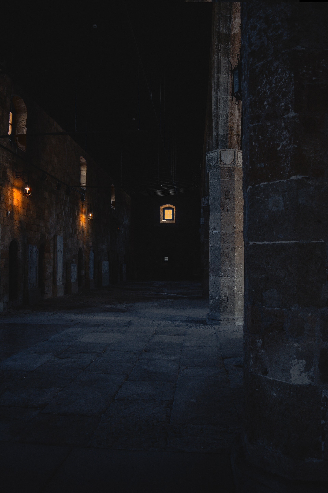
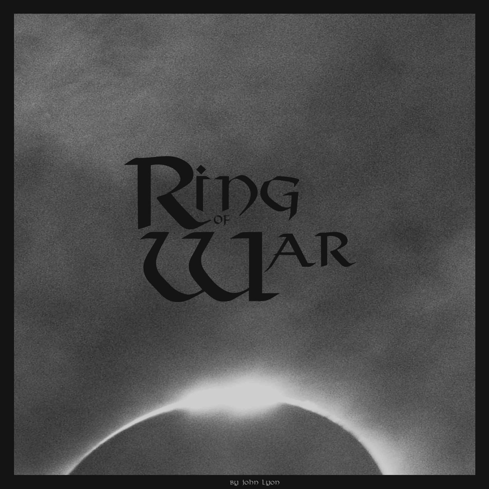

Note: The following is a short selection of original solo and commissioned music by John Lyon © 2016-2022. All Rights Reserved. Excluding official publications, artworks are all currently unofficial.
This portfolio is best suited to widescreen viewing.
CLASSICAL ORCHESTRA

SILENCE (Concept)
2022 Symphony
ROMANTIC PIANO
KAYLY'S SONG
2021 Commission
CINEMATIC
RING OF WAR
2022 Concept
ELECTRONIC

PHLURO THREE
2020

John Lyon is an Eastern and Western influenced Composer, with a great interest in genres incl. Classical, Orchestral, Jazz and Electronic music. His aim is to meaningfully contribute to the world’s vast catalogue of iconic music, pushing for quality, thought-provocation and immersion, in an endeavour to meet the desire for new virtuosity and a fresh approach to modern composition.
At 5 years of age, Lyon had already acquired a pivotal appreciation for melody and theme, and began undertaking classes and an education in piano and percussion. During this time, and throughout the years of schooling, he discovered a love and enjoyment for his strict and disciplined routine of independent music progression and experimentation. This time was spent on an intense, intimate and close study of a selection of composers incl. Mozart, Beethoven, Liszt, Tchaikovsky and Schubert; who John felt were most relevant in defining a desired composition character, and whose traits to fuse with a personalised style which focused heavily on achieving, above all, catchy melodies, harmonies and progressions, while balancing complexity and simplicity; a sound that he best describes as iconic and sometimes cheesy, but also grounded, cold and noir; elements and timbres that, to him, are excellent at drawing the listeners ear.
In recent years, Lyon’s music life has majorly revolved around writing a combination of commissioned (Incl. multiple video-game soundtracks and piano music) and solo work, as well as refining and evolving his own writing style, with the hopes of having his most cherished works realised and officially published by professional players in the near future, for the world to hear.
Ultimately, Lyon’s originals are intended as testimony, not only to his expertise and ability in composition and writing, but to the importance of music having character, story and visual accompaniment.
As well as taking influence from classical writers, Lyon has largely found inspiration from modern film composers like Howard Shore, John Williams and Ennio Morricone, and game composers such as Jeremy Soule, Woody Jackson, Motoi Sakuraba and Yuka Kitamura; individuals he considers masters of their craft.
This public commission service plays an important role in my endeavour to create a range of classical-themed hits and to make piano music that sounds new, yet familiar and iconic. As commissioned original paintings, and artworks, may serve as special and sacred gifts, I imagine that original classical music could be just as personal and gifting.
Your purposes for commissioning a piano work
Examples incl. a dedication or tribute to a loved one (spouse or family member), or a story about something important to you, a tragedy, emotion or mood. Maybe for a piano player who wants to something new. Ultimately, a commission can be in name of, or dedicated to, many aspects of somebody’s life.
The process
Written with exactly the same approach and care as taken with all my music, an emotional angle is first selected and established, before an era or more specific genre to target (e.g. Romantic-era). Next, I write and mirror the tribute, dedication or story in question. Additionally, a reference piece (e.g. “lean toward the style of Fur Elise”) could also optionally be provided to assist direction.
What will the duration of the piece be?
3–5 minutes (estimate), but not less than 3 minutes.
What’s included
The Official Score PDF.
Audio (realistic live playback representation) WAV, MP3.
Score sample.
Audio sample.
Delivery
Via email. Time for delivery will change per piece, and may take between 1-4 months.
John Lyon © 2022. All Rights Reserved.